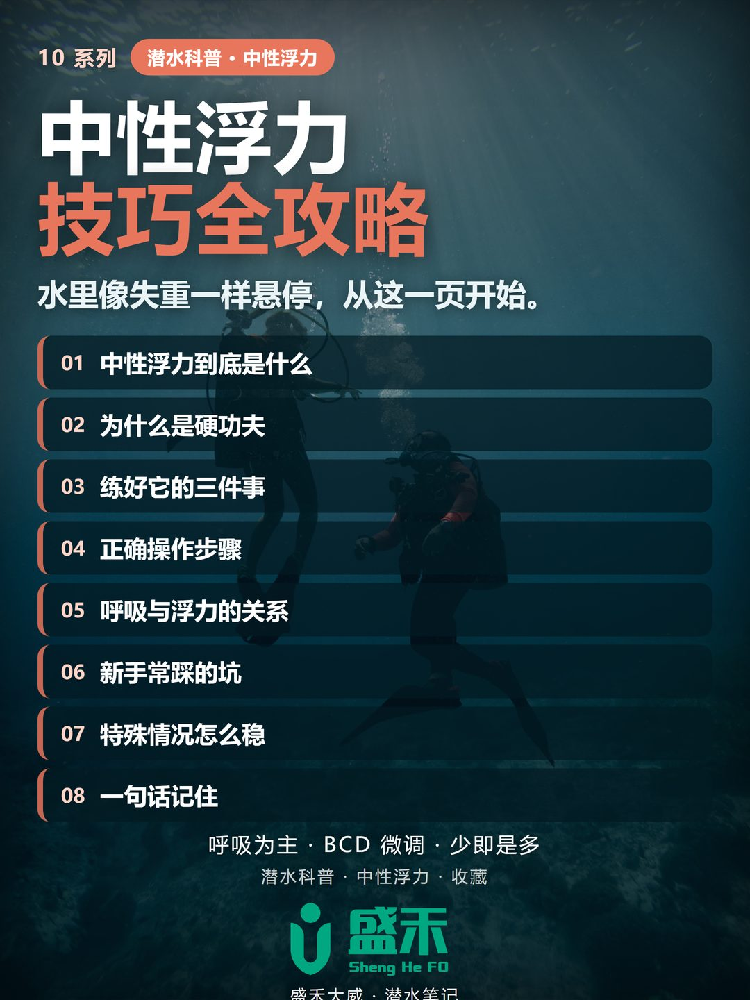
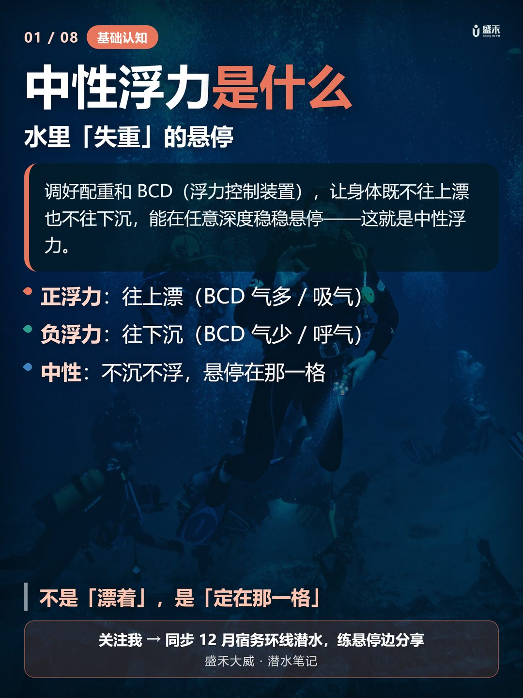
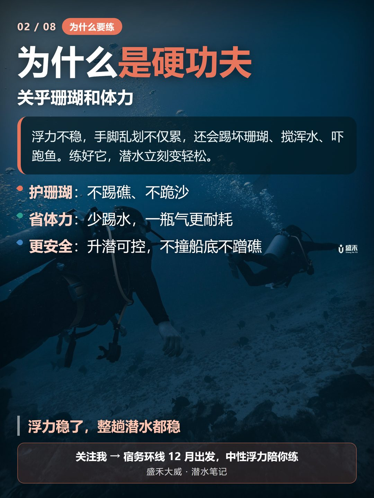
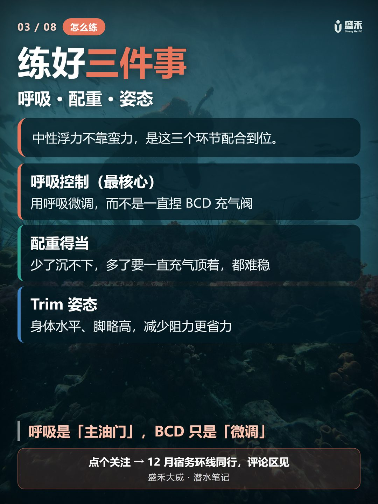
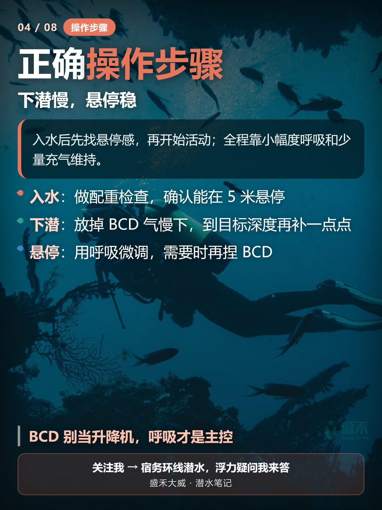
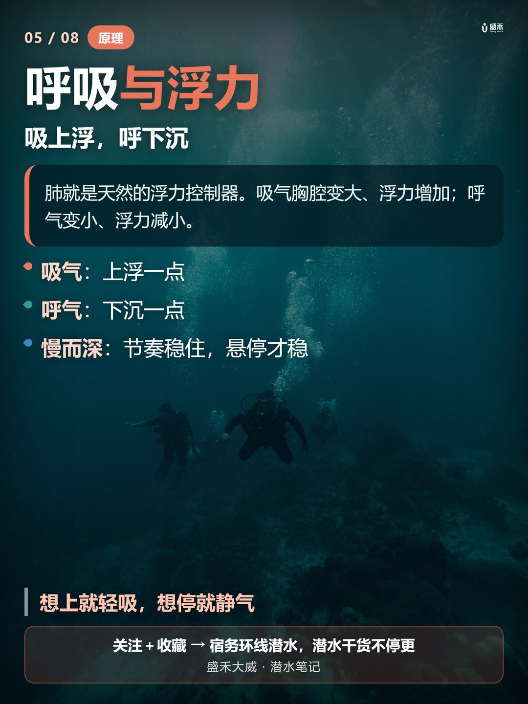
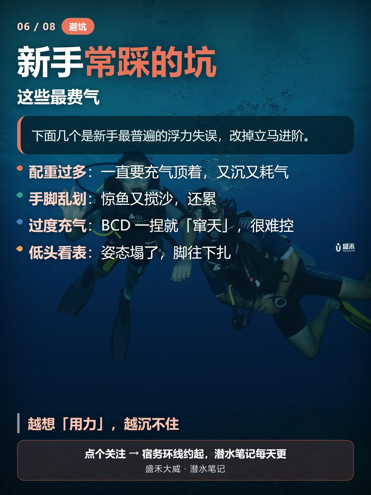
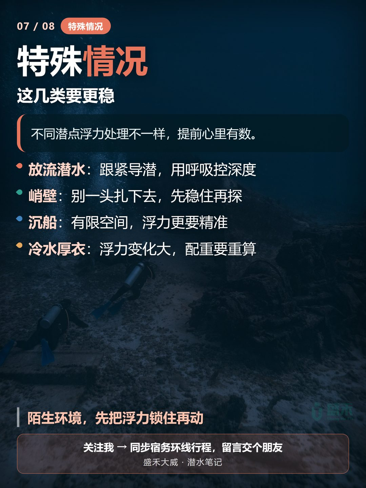
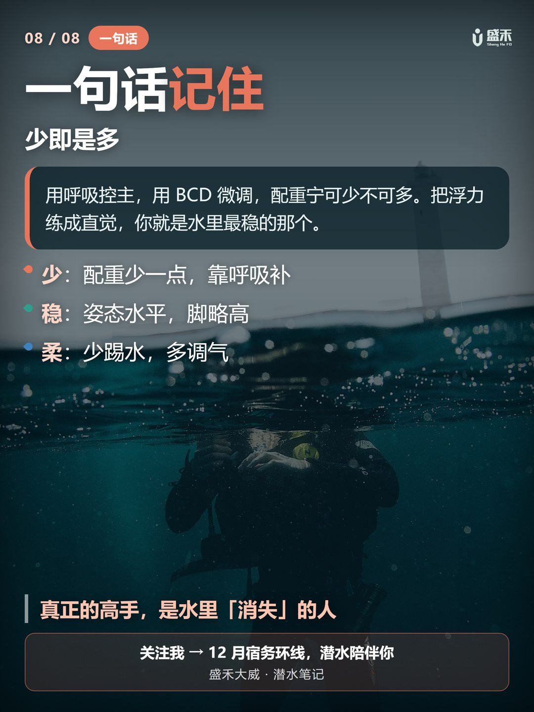

很多新手下水像「秤砣」——一直往下沉，只能拼命踢腿；或者一放松就「窜天」，浮到水面。问题通常不在你，而在中性浮力没练好。Many beginners sink like a stone or shoot to the surface the moment they relax. The problem usually isn't you — it's that neutral buoyancy isn't dialed in yet.
中性浮力，就是让你在水里「不上浮、不下沉」，像被托住一样悬浮。配重合适 + 呼吸控制 + 身体水平（Trim），三者配合才能稳住。Neutral buoyancy means neither sinking nor floating — you hang in the water as if held. Proper weight, breath control, and a horizontal trim together keep you steady.

① 保护珊瑚——悬浮稳了才不会手忙脚乱踩断珊瑚；② 省力——不用一直踢水对抗下沉；③ 安全——紧急情况能稳稳停住、不慌。1) Protect coral — steady hover means no panicked kicks that snap reefs. 2) Save energy — no constant kicking to fight sinking. 3) Safer — you can stop calmly in an emergency.

呼吸：慢而深的呼吸是浮力的微调旋钮。Breathing: slow, deep breaths are your fine-tuning knob.
配重：宁少勿多，多了必然下沉、必然踢。Weight: less is more — too much means you must kick to stay up.
Trim：身体放平，像一块板，别头重脚轻。Trim: lie flat like a plank, not head-down.

入水前先测配重（水面喘气时配重带应刚好没入胸口）；下潜中慢慢吐气、少量排气；悬浮时找一个参照物，微调呼吸停在它旁边。Check weight before the dive (at the surface, weights should sit around chest depth when you exhale). On descent, exhale slowly and dump a little air. To hover, pick a reference and fine-tune your breathing to stay beside it.

记住：呼气你会下沉一点，吸气你会上浮一点。越慢越稳。很多人上浮失控，就是呼气太急、或气瓶快空时配重相对变轻没察觉。Exhale → sink a bit; inhale → rise a bit. Slower is steadier. Many uncontrolled ascents come from exhaling too fast, or not noticing that an emptying tank makes you relatively lighter.

配重过多、用脚蹼猛打珊瑚、用手撑地站起、气瓶快空才察觉变轻。这几样最伤珊瑚也最危险。Too much weight, finning coral to bits, hands-down to stand up, and only noticing you've gone light when the tank is nearly empty. These hurt reefs most and are the riskiest.

强流中用嘴咬住二级头、贴近礁石减少漂移；峭壁/沉船注意深度，别只顾追鱼；夜潜靠电脑表灯光保持姿态。In current, grip the reg, hug the reef to drift less. On walls/wrecks, watch depth — don't chase fish. At night, use your computer light to hold trim.

慢呼吸、配重准、身体平。把中性浮力练成肌肉记忆，潜水才又轻松又干净。Breathe slow, weight right, body flat. Make neutral buoyancy muscle memory, and diving becomes effortless and clean.

我是盛禾大威，一名约 80 瓶的 PADI 潜水员，专长顶尖中性浮力。潜水科普持续更新——12 月我会在菲律宾宿务环线潜水，一边复习一边分享，欢迎留言聊聊你的浮力故事。I'm Shenghe Dawei, a PADI diver with ~80 logs, specializing in peak performance buoyancy. More dive notes coming — this December I'll be on the Cebu loop in the Philippines, sharing as I go. Drop a comment about your buoyancy story.